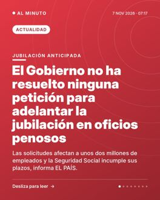

Hallan el cadáver de un bebé en un arcón frigorífico en Allariz, Ourense
La Guardia Civil investiga el caso, bajo secreto de sumario. Podría llevar más de dos décadas allí, según medios.
Ver en Instagram →Sábado 7 de noviembre de 2026 · 35 noticias · actualizado a las 21:18
La Guardia Civil investiga el caso, bajo secreto de sumario. Podría llevar más de dos décadas allí, según medios.
Ver en Instagram →Un hombre disparó a los viandantes desde un coche en la Plaza del Mercado. La policía lo interceptó a tiros y está detenido en el hospital.
Ver en Instagram →La AITAT recomienda a Adif y a la AESF actuar sin esperar al informe final del accidente que dejó 69 muertos, según el balance provisional.
Ver en Instagram →Los Mossos informan de la mayor operación contra la inmigración irregular que han llevado a cabo: la red habría ganado 3,2 millones.
Ver en Instagram →Está en prisión por orden de la Audiencia Nacional tras incumplir la prohibición de acceder a foros radicales, según la Policía Nacional.
Ver en Instagram →Según el Ministerio, no mostraría el precio final al inicio y no devolvería los gastos de gestión de los viajes cancelados.
Ver en Instagram →El Senado lo declaró culpable de mal desempeño por la caída de Ueno bank. Pedro Alliana asume la presidencia hasta agosto de 2028.
Ver en Instagram →
Las solicitudes afectan a unos dos millones de empleados y la Seguridad Social incumple sus plazos, informa EL PAÍS.
Ver en Instagram →Importar medicamentos cuesta hasta el triple al sistema sanitario y algunas mujeres pagan hasta 20 veces más, según El Mundo.
Ver en Instagram →La convalidación está prevista para el día 12. Idealista cifra en un 19% la caída media de anuncios de alquiler en España.
Ver en Instagram →Thomas Markle, de 82 años, está acusado de un cargo de posesión de material de abuso sexual infantil. Se enfrenta a un máximo de 20 años.
Ver en Instagram →El Gobierno habla de avances, pero los maquinistas ven difícil frenar la huelga del 10 de noviembre.
Ver en Instagram →El murciano salvó dos bolas de partido y ganó 6-7(10), 7-5 y 6-3. Su triunfo deja a Rafa Jódar en las ATP Finals.
Ver en Instagram →Feijóo y Abascal critican que Adif renovase los incentivos a sus directivos días después del siniestro. Las elecciones son el 29 de noviembre.
Ver en Instagram →El presidente contrapone la dimisión del exministro con la actitud del PP y Vox, tras el accidente ferroviario de Urda.
Ver en Instagram →Vox y PSOE reactivan la precampaña con actos en Granada y Valencia, con las generales fijadas para el 29 de noviembre.
Ver en Instagram →Gregorio Jiménez y las familias Galán y Costa controlarán el 51% de Restaurant Brands Europe, según Expansión y Cinco Días.
Ver en Instagram →Según datos del INE, el tipo medio de las fijas sube un 8,5% en lo que va de año, hasta el 3,16%. Las variables suben un 3,5%.
Ver en Instagram →Nadia Calviño anuncia un acuerdo con el Institut Català de Finances que se firmará en los próximos días.
Ver en Instagram →Yolanda Díaz anuncia una subida superior a la recomendada por los expertos, según ABC, y sin tributar en el IRPF.
Ver en Instagram →La Aemet alerta de posibles inundaciones y crecidas súbitas de ríos. Galicia, el norte peninsular y La Palma, entre las zonas señaladas.
Ver en Instagram →España es uno de los 15 países con actos convocados este sábado, según informa EL PAÍS.
Ver en Instagram →Según Reuters, algunas instalaciones llegaron a los 50 grados y las pérdidas podrían ser de millones de euros.
Ver en Instagram →Según el WSJ, inversores ven una valoración más cercana a 1 billón de dólares que a los 1,5 billones previstos.
Ver en Instagram →El texto, de 110 artículos, sustituiría a la norma de 2005. El PSOE se abstuvo; Podemos e IU votaron en contra.
Ver en Instagram →Según Magisterio, ambas medidas figurarán en el programa del partido para las elecciones generales del 29 de noviembre.
Ver en Instagram →Laura Díaz Anadón, vicepresidenta del consejo científico europeo, defiende que las renovables abaratan la energía, según El País.
Ver en Instagram →El presidente dice que se destruyó un sistema antiaéreo iraní. Medios de Irán hablan de dos explosiones en la isla de Qeshm.
Ver en Instagram →Miller, artífice de su política migratoria, sustituye a Susie Wiles tras la derrota republicana en las elecciones de mitad de mandato.
Ver en Instagram →El documental de Luis E. Parés plantea el flamenco como territorio en disputa entre el franquismo y quienes huyeron de él.
Ver en Instagram →La banda británica actúa en el Movistar Arena de Madrid y reencuentra al público español tras más de dos décadas.
Ver en Instagram →Si gana mañana y Jorge Martín no puntúa, el piloto de Cervera será campeón del mundo de MotoGP, según informa la prensa.
Ver en Instagram →Los dos partidos de la jornada 23 se juegan el miércoles 2 de diciembre por la Supercopa de España, que será en Estambul.
Ver en Instagram →Las casetas rojas volverán al centro de Madrid con más de cien puestos y estarán abiertas hasta el 31 de diciembre.
Ver en Instagram →La fiesta arranca este sábado 7 de noviembre y tiene su día grande el miércoles 11, con castañas, vino nuevo y música folk.
Ver en Instagram →